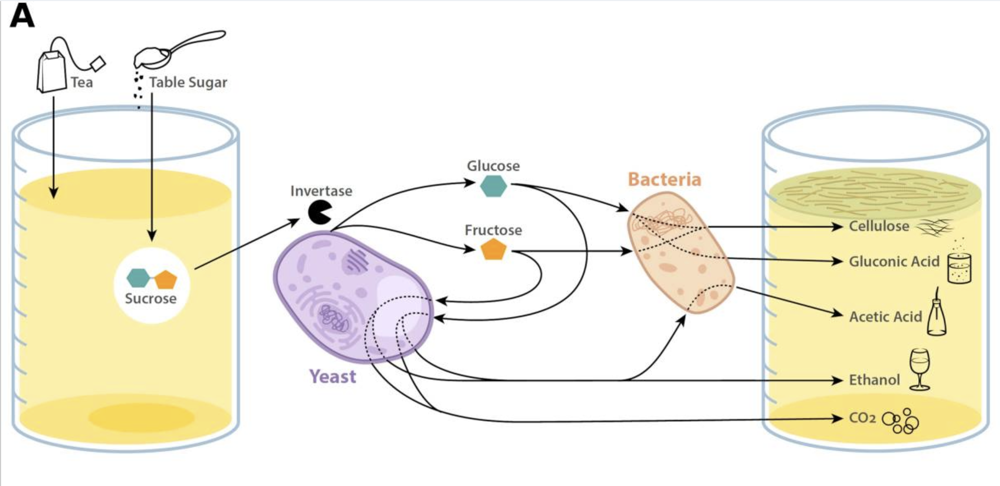
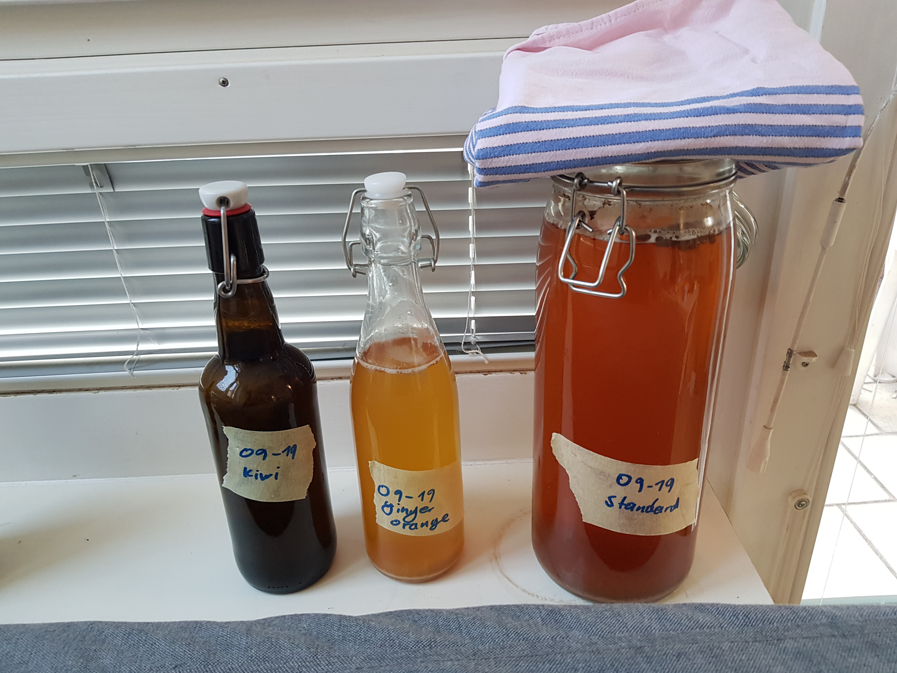

I went to on vacation in Carinthia with some friends recently. We stayed a couple of days at a friends Aunt and she had a kombucha that she had maintained for 40 years. She always used tea made from fresh herbs taken from her garden and it was delicious. I had only tried the store-bought stuff before but I knew that you could make your own without much difficulty. She was kind enough to give me some of her SCOBY in a jar that I took back home to start my own.
I made the first batch from r/kombucha's master recipe:
- 1l of black tea (brewed with 7g)
- 70g sugar
- 1-2 cups of kombucha
You should leave this mixture in open container with a breathable cover for a week. Afterwards you can bottle it in fermentation-grade glass bottles (no square bottles!) with some more sugar in the form of fruits, purees, juices or syrups and let it sit for another 1-7 days. You can look at the details here
a bit of chemistry
 As you can see the sugar is broken up into glucose and fructose before it can be metabolized by the SCOBY. For the second batch I tried substituting sugar for honey. Honey contains glucose and fructose in unbound form, so fermentation happened a lot quicker and more sugar was metabolized in total. The end result was a very strange tasting drink, imagine honey with no sweetness diluted in sugar. Additionally, honey is known for it's anti-bacterial properties, so maybe honey is not the best choice as a primary source of sugar. I'll try using it in the second fermentation sometime.
Nevertheless I bottled the honey batch with some kiwi in one bottle and a ginger-orange syrup in another and it worked out great. The ginger batch had great fizz 